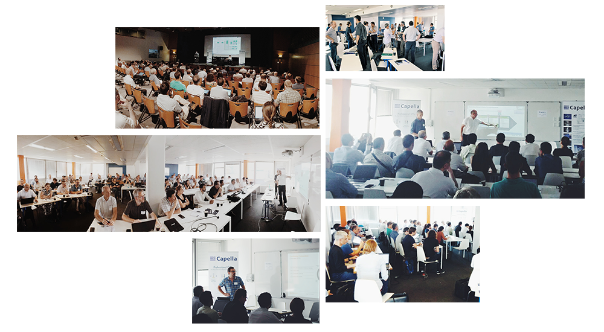

Capella Day was held on March 13rd at Stuttgart. If you want to know what happened there, please read this news.
Stay tuned to know when and where the next Capella Day will be organized by following the @capella_arcadia Twitter account, the Capella LinkedIn account, or joining the LinkedIn discussion group about Capella.
Feel free to check the Capella official website and its upcoming events section.
You can also discover the slides.

About
What is Capella Day?
This one-day event, organized by Thales and Obeo, brings together the community of Capella and Arcadia:
- creators of this innovative systems engineering solution,
- providers of Capella add-ons and services,
- MBSE experts and industrial users.
See all the editions.
What is Capella?
Capella is an open-source and field-proven Model-Based Systems Engineering (MBSE) solution to successfully design systems architecture.
It provides systems, software and hardware architects with rich methodological guidance relying on Arcadia, a comprehensive model-based engineering method based on both industrial experimentations and system engineers' feedback
Natively supporting Arcadia , Capella can be customized to fit the specific needs of many industrial domains.
Partners
Capella Day is organized by Obeo and Thales
Agenda
| Talks | Speakers | ||
|---|---|---|---|
| 08:45 - 09:15 | Coffee | ||
| 09:15 - 09:30 | Introduction and Welcome | ||
| 09:30 - 10:30 |
Capella and Arcadia |
|
|
| 10:30 - 11:00 | Break | ||
| 11:00 - 12:00 |
Feedbacks on Experience |
|
|
| 12:00 - 13:30 | Lunch | ||
| 13:30 - 15:10 |
Add-ons and extensions |
|
|
| 15:00 - 15:30 | Break | ||
| 15:30 - 17:00 |
Community and Ecosystem |
|
|
| Closing |
Talks
What Makes Capella Different?
Is Capella just another modeling solution?
After all, you also draw boxes and arrows. After all, you also model structure, data, interfaces, behavior. After all, you also have to define your own modeling guidelines and objectives.
So, what makes Capella different from the other modeling solutions out there?
What is the scope of Capella and its corresponding methodology Arcadia? How can you benefit from nearly 10 years of MBSE return on experiment? Why is open source a game changer? How can you contribute to shape the future of your own engineering environment?
Stéphane Bonnet, Thales Corporate EngineeringStéphane Bonnet is in charge of Thales Corporate MBSE Coaching and Design Authority of the Capella open source modeling solution. For the last ten years, he has led the development of Capella and has been an active contributor to the Arcadia model-based method for systems, hardware and software architectural design. In Thales, he is animating a wide community of modeling experts from all domains and countries to investigate low-maturity modeling topics, capture end-user needs, and orient method and workbench roadmaps.. |
Arcadia by the example, an introduction
What kind of engineering data are managed in Arcadia? How are they related and confronted to each other’s? How can this help in defining a solution and checking its adequacy with need? Answers to these questions will be illustrated by an insight inside an example model whose elaboration will be commented.
Jean-Luc Voirin, Thales Corporate EngineeringJean-Luc Voirin is Director, Engineering and Modeling, in Thales Defense Missions Systems business unit and Technical Directorate. He has been an architect of real-time and near real-time computing and mission systems on civil and mission aircraft and fighters. He is the principal author of the Arcadia method and an active contributor to the definition of methods and tools. He is involved in coaching activities across all Thales business units, in particular on flagship and critical projects. |
The challenges of multi-disciplinary systems engineering
In this talk you will learn how ArianeGroup is meeting the challenges of multi-disciplinary system engineering through MBSE and the introduction of the Arcadia Method and Capella.
Alain Huet, ArianeGroupAlain Huet is head of System Engineering Solutions at Airbus Safran Launchers, managing the adoption of MBSE. Working in the Airbus group for more than 35 years, he has been participating in the development of numerous defence and space programs such as satellites, launchers, space vehicles, and air traffic management. On these systems he has used and implemented processes, methods and tools to manage requirements, validation & verification, real time and hardware in the loop simulations. |
Use of Capella in bid phase of railway signalling projects, experiences and challenges
Capella and the underlying method ARCADIA are well known as system architecture tools used in the development phase of systems. But the preceding bid phase often require a creation of a rough system architecture, for example for the coordination of the interfaces to neighbouring systems.
This presentation shows how the different layers of ARCADIA and the corresponding implementation in Capella could be used to solve several problems occurring in the bid phase. Additional it illustrates the challenges resulting from the broad variability of solution in the railway signalling business.
Dr Michael Schaefer, Thales DeutschlandDr Michael Schaeffer is working since 1992 for Thales and the predecessor companies Alcatel and SEL as software and system architect in the following areas: |
Team Collaboration and Document Generation with Capella
Your MBSE projects involve teams working concurrently? You need to produce many documents from the models of your systems?
During this talk, you will discover two Capella adds-on: Team for Capella and M2Doc.
Team for Capella allows users to collaborate on remotely shared models and representations, while M2Doc automates the production of MS Word™ files from your models.
Laurent Delaigue, ObeoLaurent Delaigue has been working in the field of model engineering for 15 years. As a modeling consultant at Obeo for 10 years, he participates in numerous modeling projects generally based on open- ource technologies such as Acceleo, Sirius or Capella. |
Managing your Capella assets with Yuzu
To support reuse strategies, Capella provides the powerful mechanism of REC/REP that, along with libraries, allows to organize reusable building blocks. To go further, the latest version of Capella embeds a new modeling accelerator that drastically ease the creation process of a REC library. With these exciting features, no doubt that the number of libraries will keep increasing. And when you mix this with version management, the combinations rapidly explode. In all your production, how to find the right library?
Yuzu is an asset management solution - based on the OMG RAS standard - that will allow you to keep track of all the Capella projects and libraries. In addition to the business meta-information filled by the author, Yuzu automatically extracts additional data, metrics and dependencies from the Capella model and then publish the packaged model in a repository. Later, the powerful query engine allows you to search for a specific model, based on any meta-information or model content and download it along with all its dependencies. Never lose track of your Capella models again!
 |
Benoit Viaud, ArtalBenoit Viaud leads Artal’s System Engineering unit. He initiated the creation of Citrus, a one-stop-shop engineering framework for simulation and is deeply involved in its deployment in Airbus. Active member of Clarity project, he also carries out coaching and consulting activities around Capella. |
Systematic reuse of Capella assets with pure::variants – How to capitalize on your assets?
Compared to single product development, developing and maintaining a portfolio of related products comes with additional challenges. A systematic approach is needed to realize a high reuse rate that minimizes the maintenance effort and maximizes the productivity.
Prof. Dr. Danilo Beuche will present how these challenges can be tackled for all assets of the development lifecycle using pure::variants, focusing on its integration with Capella.
Prof. Dr. Danilo Beuche, Pure-SystemsProf. Dr. Danilo Beuche is CEO of pure-systems GmbH. pure-systems is a software company specialized in services and tool development for the application of product line technologies in software-intensive systems He started to work in the field of embedded operating systems and software families in the mid 90's. He also received his PhD in this area. His work on tool support for feature based software development finally lead to the founding of pure-systems in 2001. |
Guide to Arcadia and Capella successful adoption
This presentation will focus on key factors in order to adopt MBSE successfully with Arcadia/Capella.
What are the questions to ask before embracing MBSE, how to organize teams, what are the key steps of adoption, what are the main pitfalls?
We will try to provide insight into recent Capella adoption efforts from various companies, lessons learned and best practices.
Pascal Roques, PRFCPascal Roques is a Senior Consultant with more than 25 years of experience in consulting and training in modeling with SADT, OMT, UML, SysML and Arcadia/Capella, He is a regular trainer for Thales on Systems Modeling with Arcadia, long before Capella was open-sourced. Since 2008, he has led more than 140 Capella courses in France and Europe for more than a thousand engineers. Pascal is the author of the first book published on Capella at Elsevier - Iste Editions. |
The Capella Industrial Consortium
In the last few decades, companies have developed business models around open source providing services, extensions, courses and so on: Business friendly ecosystems around open source technologies like Linux, Eclipse, Apache have developed. In the late 2000's, the Eclipse Foundation started to replicate the best practices that made the success of the Eclipse platform to new domains, and to integrate industry players that were seen as software consumers at the core of these new ecosystems. The main driver for these new form of consortia was to use open source as a framework for open collaboration and open innovation.
The presentation will briefly discuss the challenges that industries are facing (cross-company, cross-domain, long-term availability, open innovation). After that, we will present the Capella Industry Consortium (IC) that has been created as a new Eclipse Working Group to develop the Capella ecosystem with vendor-neutral and open governance. It aims at fostering collaborations, sharing investment and best practices and leveraging Open Innovation to co-develop new MBSE capabilities. The scope of this Working Group focuses on the Capella tool, the add-ons and the underlying technologies.
Ralph Müller, The Eclipse FoundationRalph Müller is currently the Managing Director of the Eclipse Foundation Europe GmbH, a subsidiary of the Eclipse Foundation Inc., responsible for supporting the Eclipse open-source community and commercial ecosystem in Europe. With over 260 corporate members worldwide and over 150 projects, Eclipse is one of the world’s most successful open source communities. Prior to joining Eclipse in 2005, I have worked for Vector Informatik, IBM , OTI and Siemens. He has earned a degree as a Diplom-Informatiker from the Technical University of Darmstadt, Germany. |